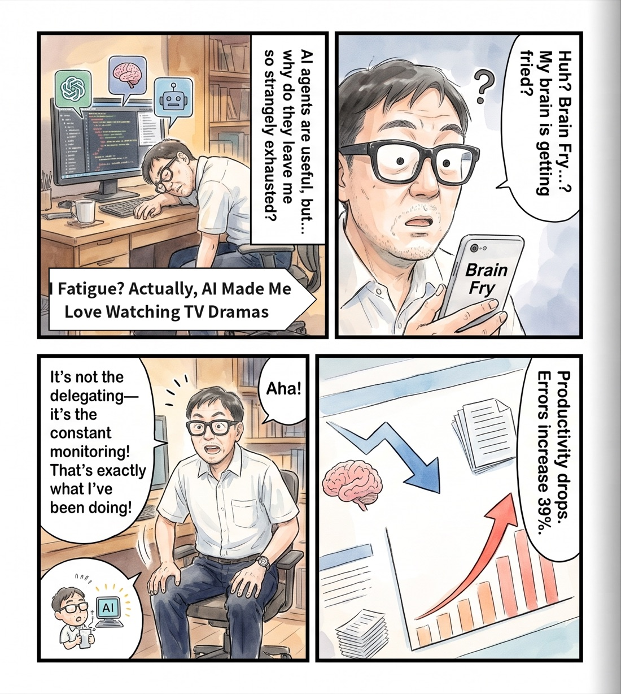
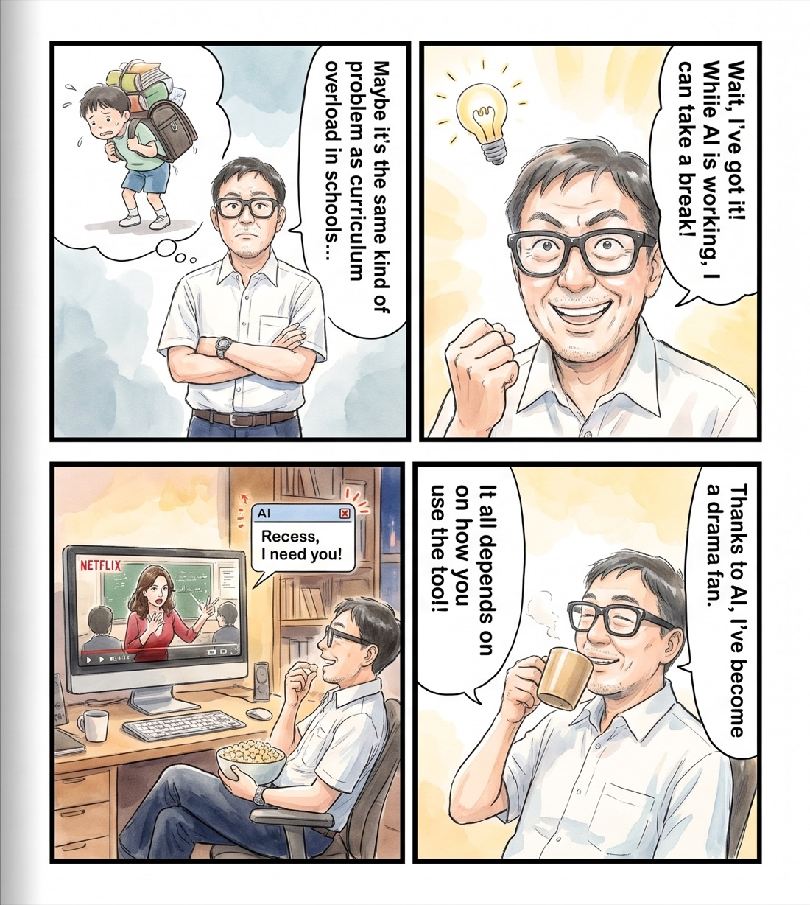
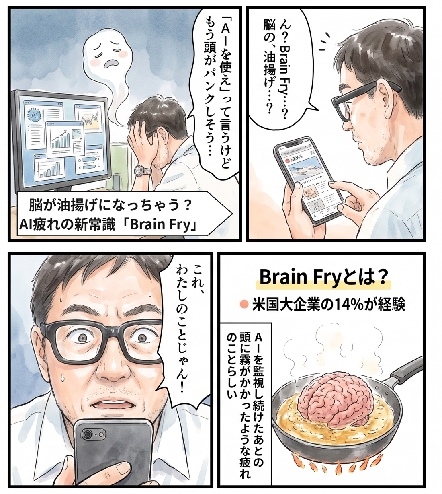
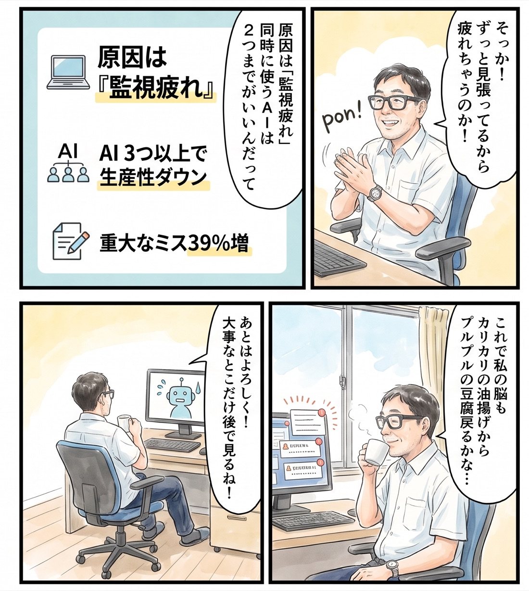

Recess
AI works, you take recess. Your video plays by itself while the agents work, and pauses to bring you back to the terminal when herdr calls.
English first, 日本語は後半（日本語へ）.


What hurts
It is night. In the terminal, a few AI agents are each working on something. I sit in front of them. I am not doing anything. I am watching the screen.
I am waiting to be called. A question may come, or the work may finish. So I cannot leave. If I leave, I will not notice when it stops. But while I watch, there is nothing for me to do.
I use AI agents every day, on purpose. And every day I feel my brain wearing down. Running dozens of agents nonstop is not something I want to do.
What we want
"While the AI works, I want to spend my own time. But the moment my judgment is needed, I want to be back, reliably."
This is not "make the AI faster" or "run more AI". It is turning waiting time into my time.
What we have been using
- Watching the screen. The most reliable, and the most tiring.
- herdr's sounds and toasts. I know I was called. But to hear the sound, I stay near the terminal anyway.
- My phone. I miss the call.
- Starting another terminal job. That turns waiting for AI into running more AI. It goes the wearing-down way.
None of them gave me both: leaving and coming back.
Our conflict
| Force | What it is |
|---|---|
| Push | Waiting time disappears as blank. The fatigue of watching. A chronic, heavy headache. Run several agents and there is more to watch |
| Pull | A change of scene with a show. Half automatic, half forced (you can switch it off any time). When called, the show pauses and the terminal comes to front |
| Anxiety | Agents keep running in the background while I watch a show, and I do not know what they are doing |
| Habit | Nothing needs automating. When the agent starts running, just open the book you were reading |
Recess exists because of three lines drawn against the anxieties.
What Recess does
- Only while an agent is working, it brings the browser to front and sends one space key. The show plays.
- When an agent asks a question or finishes, it sends one more space key and brings the terminal to front. The show pauses.
- The only thing that sends a key is
Recess.app, a one-line AppleScript app. The Accessibility permission goes to that app and nothing else. The Python daemon gets none.
Three lines:
- What I hand over: an unattended process gets one line's worth of permission, no more.
- When I am called: leaving waits 3 seconds after my hands are off; calling back is immediate.
- How I come back: one space key, 0.3 seconds, terminal.
recess off makes it watch only. "That's enough for today" is your call (see Switch it on and off).
I never watched Netflix. Now I watch it while the AI works. To me, that is surprising. What it was tested on, and what it cannot do, is in Known weaknesses and Who wrote this.
Everything else
- Install guide: requirements, the two commands, the one permission, on/off, who wrote this → docs/install.md
- Specification: how it decides (state diagram), settings, logs and stopping, known weaknesses → docs/spec.md
Author
Feel Physics / Tatsuro Ueda — feel-physics.jp
License
MIT. See LICENSE.
Recess（日本語）
AI が働く間は休み時間。動画は勝手に再生され、herdr に呼ばれたら止まってターミナルへ戻る。


何が苦しいか
夜。ターミナルの中で、AI エージェントがいくつか別々の仕事を進めている。私はその前に座っている。何もしていない。画面を見ているだけだ。
呼ばれるのを待っている。質問が来るかもしれないし、終わるかもしれない。だから離れられない。離れたら、止まっているのに気づかない。でも見ていても、することはない。
AI を積極的に使っている。その一方で、毎日、頭がすり減っているのを感じる。AI を多数立ててひたすら回すのは、私はしたくない。
私たちの望み
「AI が働いている間、私は自分の時間を過ごしたい。ただし、私の判断が要る瞬間には、確実に戻りたい。」
これは「AI を速くする」でも「AI を増やす」でもない。待ち時間を、自分の時間に変えることだ。
今まで使ってきたもの
- 画面を見続ける。いちばん確実で、いちばん疲れる。
- herdr の効果音とトースト。呼ばれたことは分かる。でも音を聞くために、結局ターミナルの近くにいる。
- スマホをいじる。呼ばれても気づかない。
- 別のターミナルの仕事を始める。AI を待つ時間を、AI を増やす時間に変えてしまう。すり減るほうへ進む。
どれも「離れる」と「戻る」の両方は満たさなかった。
私たちの葛藤
| 力 | 中身 |
|---|---|
| 押し出す力（Push） | 待ち時間が空白のまま消える。画面を見張る疲れ。慢性的な重い頭痛。複数のエージェントを回すと、見張る先が増える |
| 引き寄せる力（Pull） | 動画を見て気分転換できる。半ば自動的に、半ば強制的に（任意にオフにできる）。呼ばれたら動画が止まり、ターミナルが前に出る |
| 不安（Anxiety） | 動画を見ている間に、裏で AI エージェントを走らせること。何をしているか、わからない |
| 慣れ（Habit） | 自動化する必要はない。AI エージェントが走り始めたら、読みかけの本を開いて読めばいい |
Recess は、不安に対して3本の線を引くことで成り立っている。
Recess がすること
- AI が働いている間だけ、ブラウザを前に出してスペースキーを1回送る。動画が動く。
- AI が質問したか、終わったら、スペースをもう1回送って、ターミナルを前に出す。動画が止まる。
- キーを送るのは、AppleScript 1行のアプリ
Recess.appだけ。アクセシビリティの許可はこのアプリにだけ出す。常駐の python3 には何も渡さない。
線は3本。
- 任せる範囲：無人で動くものには1行ぶんの権限しか渡さない。
- 呼ばれる時機：連れ出す側は手を離して3秒待つ。呼び戻す側は即時。
- 戻り方：スペース1回、0.3秒、ターミナル。
recess off で見張るだけになる。今日はここまで、はあなたが決める（ON と OFF の切り替え）。
もともと私は Netflix をまったく見ない人間だった。それが、AI が働いている間に Netflix を楽しんでいる。私にとっては驚くべきことだ。何で確かめたか、何ができないかは分かっている弱点と誰が書いたかにある。
そのほかのこと
- 導入方法：動作の前提、2行のコマンド、許可、ON/OFF、誰が書いたか → docs/install.md
- 仕様詳細：どう判断しているか（状態遷移図）、設定、ログと止め方、分かっている弱点 → docs/spec.md
作者
Feel Physics / 植田達郎 — feel-physics.jp
ライセンス
MIT。LICENSE を見てください。